뉴스
기술의 변화, 매일 한눈에.
카메라 · 스마트폰 · AI, 해외 테크 소식을 모아 전합니다.
최근 발행2026-11-11
새로 들어온 소식
최신 뉴스
전체 4,276개 기사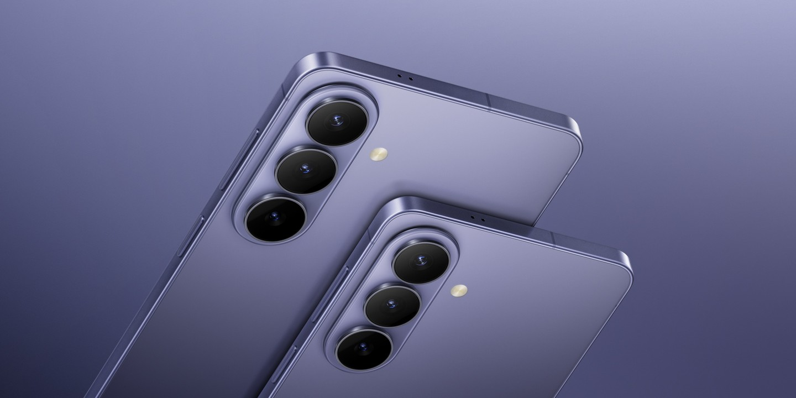
Samsung Galaxy S27 시리즈 스마트폰, Pro 및 Ultra 버전이 출하량의 70% 차지할 것으로 예상
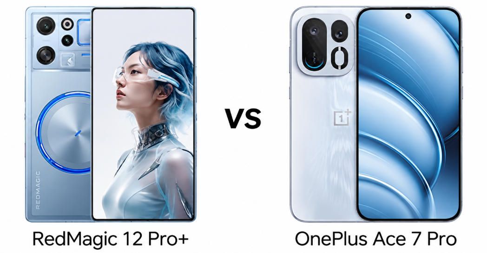
RedMagic 12 Pro+ vs OnePlus Ace 7 Pro: 어떤 플래그십 게이밍 스마트폰이 더 좋을까?

Rapidus 고이케 아쓰요시 사장: 기존 팹 근처에 공장 3곳과 R&D 기지 1곳 추가 건설 계획

Oppo의 12,000mAh 배터리 스마트폰 공식 이미지 공개
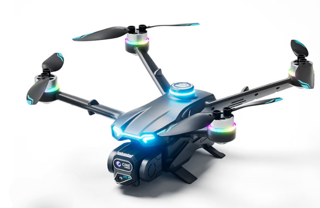
노바맨, 전자 펜스 및 감지 회피 기능 없는 드론 4종 리콜, 무료 반품 및 환불
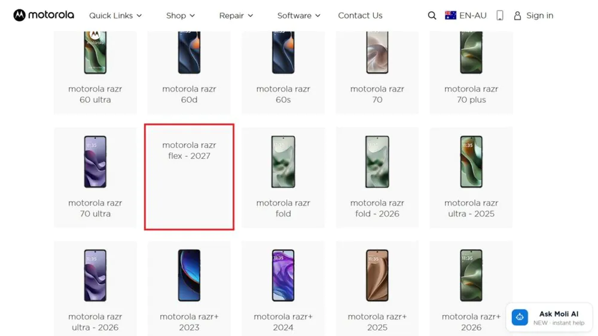
모토로라 와이드 폴더블 스마트폰 Razr Flex 2027, 공식 웹사이트에서 첫 확인, Qualcomm 스냅드래곤 8 5세대 칩 탑재 예정
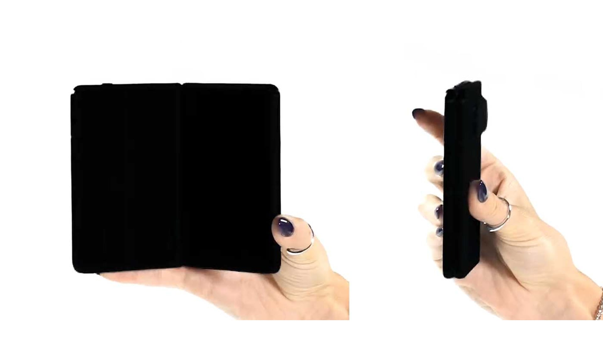
모토로라의 아이폰 듀오 킬러 출시 시기는?
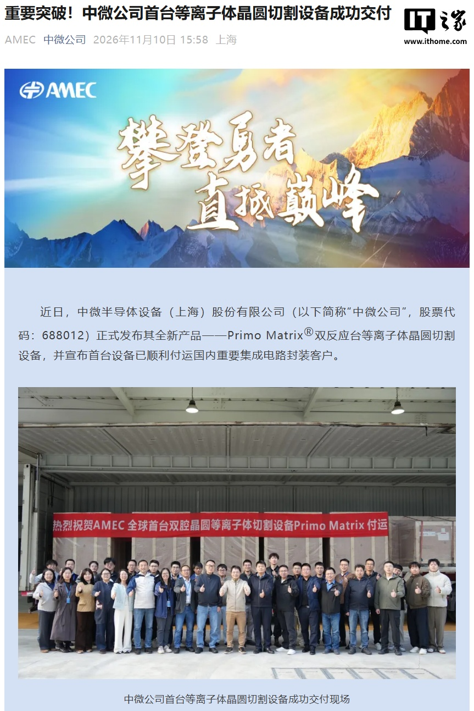
국산 기술 재돌파: 중웨이(AMEC)의 첫 플라즈마 웨이퍼 절단 장비, 국내 주요 IC 패키징 고객사에 성공적으로 납품

iPhone 18 Pro/Max, 징둥에서 8,499위안부터 12개월 무이자 할부, 중고 기기 보상판매 시 1,000위안 이상이면 1,200위안 추가 보조금 지급

7일 체험 + 12개월 무이자: iPhone 18 Pro/Max Apple 공식 11.11 할인 800위안
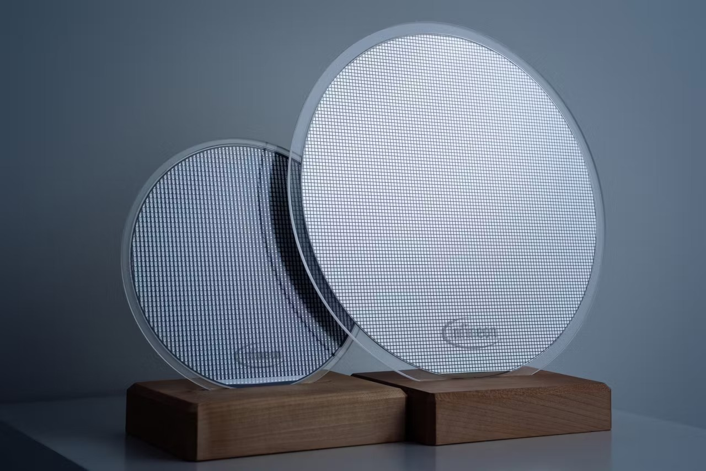
인피니언, 세계 최초 300mm 실리콘 카바이드 전력 소자 웨이퍼 생산 성공

인도 타타 전자 공장, 독가스 흡입으로 3명 사망... Apple 스마트폰 부품 생산 공장으로 알려져
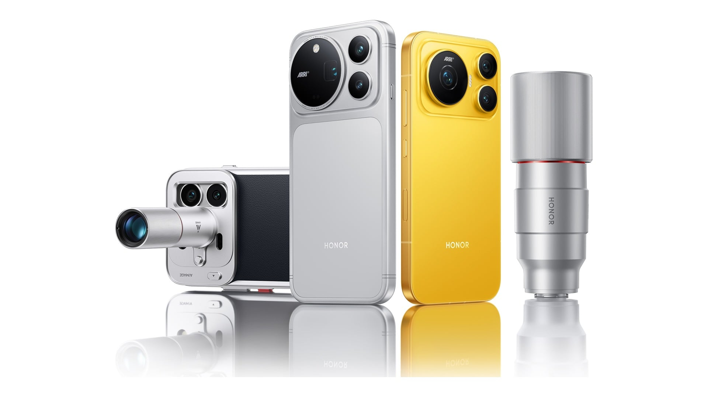
새로운 레드 Honor Magic 9 색상 및 사진 마스터 키트가 곧 출시될 수 있습니다.
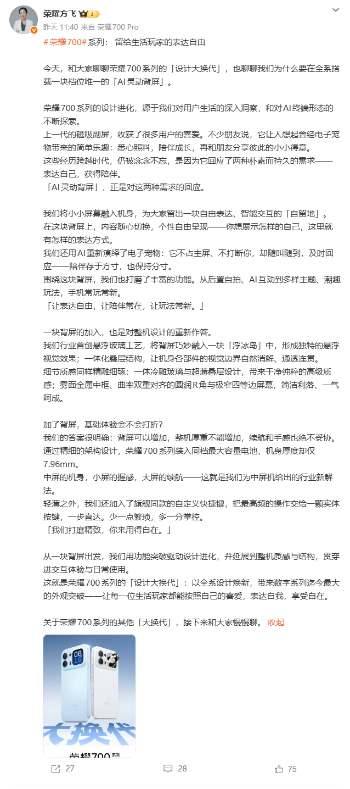
스마트폰 후면 스크린의 시대가 다시 오는가? 이번 Honor 700에는 AI 엔진이 탑재된다

DOOGEE, 6.38인치 90Hz 16:10 비율 패널 탑재 Note60 W 바 타입 스마트폰 12월 중순 출시 예정
AR/VR, 차량용 광장 등 핵심 픽셀 엔진 지원, 중국 주도 광선 스캐닝 레이저 디스플레이 국제 표준 공식 발표
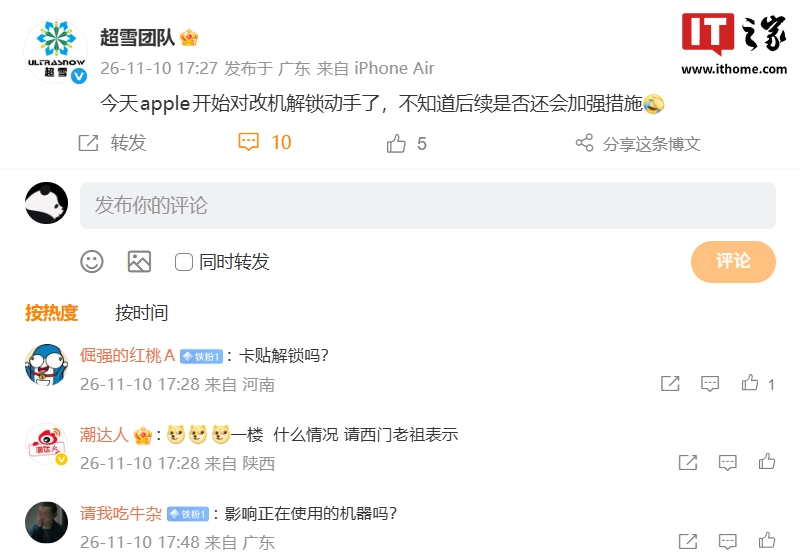
Apple, iPhone 개조 잠금 해제 단속 시작... 추가 조치 강화 여부는 불확실
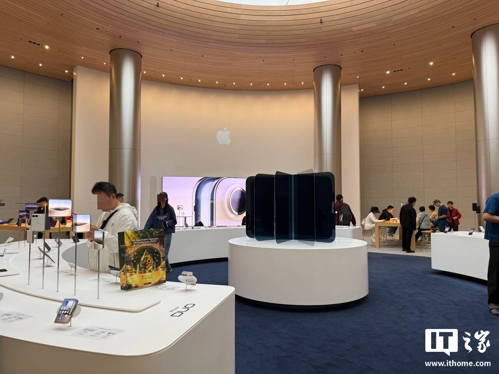
Apple, 첫 폴더블 디스플레이 스마트폰 iPhone Duo 재고 풀기 시작, 국내 여러 Apple Store에서 일부 모델 당일 매장 수령 지원
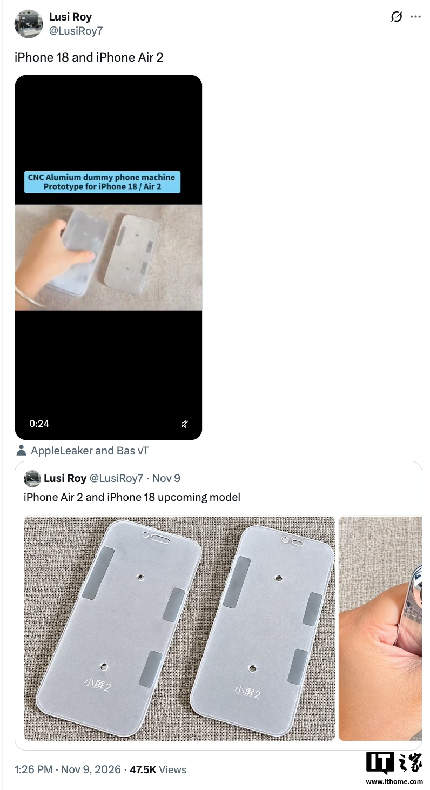
Apple iPhone Air 2 목업 유출: 두께 5.2mm, 4,800만 화소 초광각 렌즈 추가
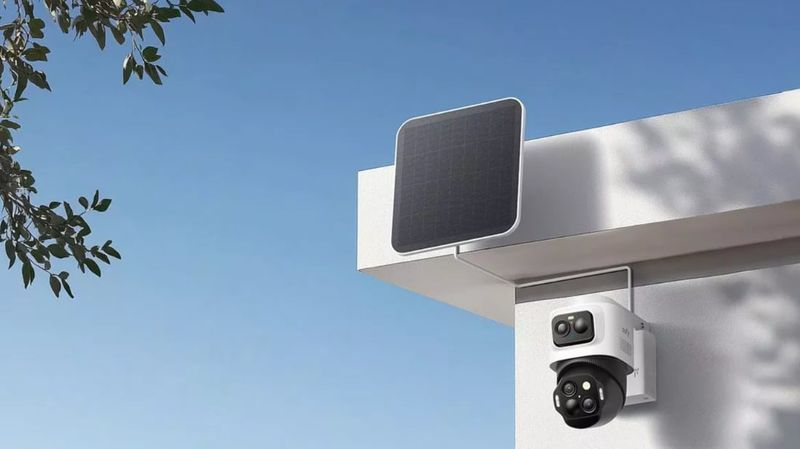
세계 최초 자동 추적 조명 보안 카메라: Anker eufy, TrackLight Cam S1 출시, 최대 12m 거리에서 의심스러운 낯선 사람 위협
AI 웜/콜드 스토리지 산업 배치: Huawei, 11월 12일 신형 스토리지 시스템 시범 운영 현장 회의 개최
검색 결과가 없습니다
다른 검색어를 입력하거나 필터를 초기화해 보세요.